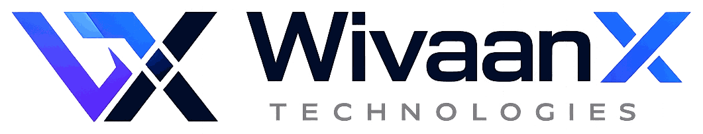

WivaanX Technologies
First rays of intelligence.
WivaanX Technologies builds practical AI models for real businesses.
hello@wivaanx.com
First rays of intelligence.
WivaanX Technologies builds practical AI models for real businesses.
hello@wivaanx.com